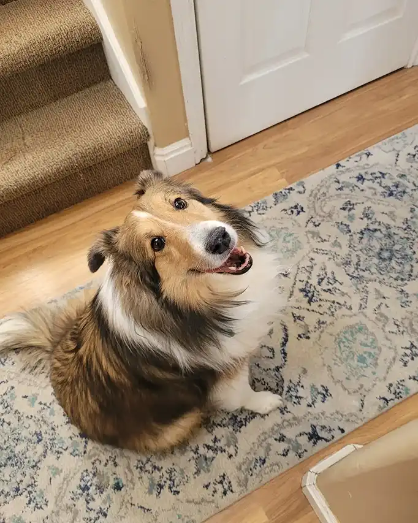

Home
Why you should adopt a Sheltie
Adopting a Shetland Sheepdog (otherwise known as a Sheltie) can be a great decision for the right person or family. Here are some good reasons as to why you should adopt a Sheltie:
- Shelties are highly intelligent dogs.
- Shelties are very loyal and loving to their owners and family.
- Shelties can make excellent family dogs.
- Shelites are naturally clean and can be easy to housebreak.
- Shelties usually have a lifespan of 12-15 years.
Adopting a Sheltie means welcoming a bright, loyal, and affectionate companion into your life. With their intelligence, devotion, and gentle nature, Shelties make wonderful additions to families, singles, and active households alike. Choosing to adopt one doesn’t just change their life — it’ll likely change yours for the better, too.
Where to adopt Shelties
If you're considering adding a Sheltie to your family, here are several great places to begin your search:
-
Sheltie Rescue of Utah
1930 Viscounti Drive
Sandy, UT
84093 -
Animal Care of Davis County
1422 E 600 N
Fruit Heights, UT
84037
If you have any questions about the adoption process, feel free to call us at 800-234-5678.